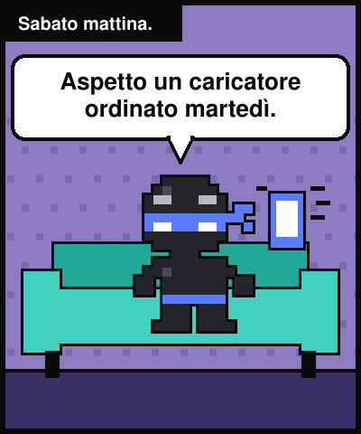
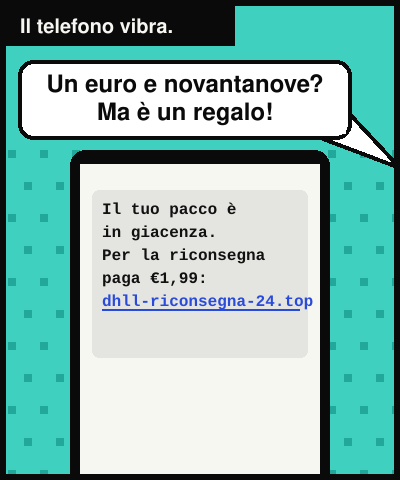
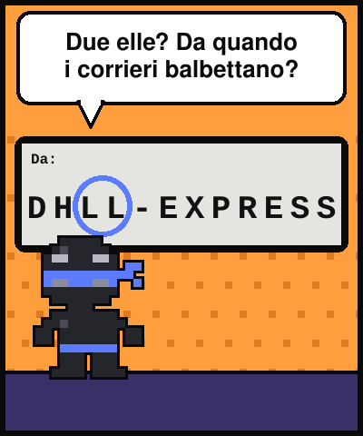
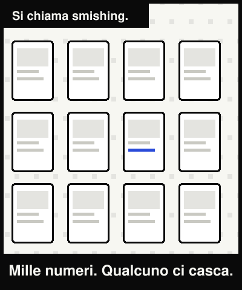
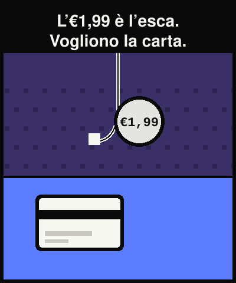
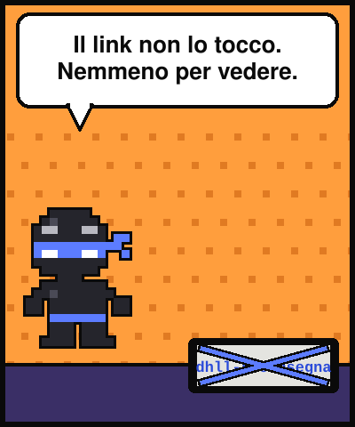
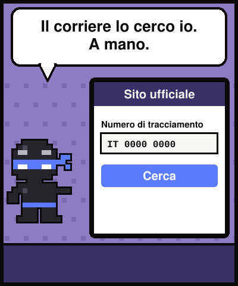
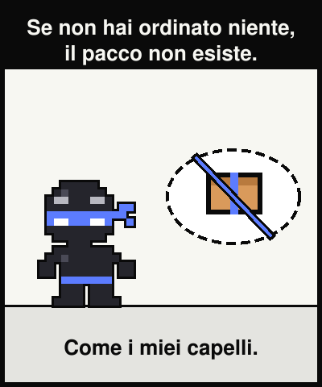

Lezione dal 2077 · n.001
L'SMS del corriere fantasma, la giacenza da €1,99 e il pacco che non è mai esistito.








Sabato mattina. Aspetto un caricatore ordinato martedì, e il telefono vibra:
Un euro e novantanove. Poi ho visto il mittente: due elle. Da quando i corrieri balbettano?
Si chiama smishing: phishing via SMS. Lo stesso messaggio parte verso tantissimi numeri; qualcuno starà davvero aspettando un pacco.
Il link porta a una copia del sito del corriere. L'€1,99 non è il prezzo, è l'esca: per pagarlo dai i dati della carta. Un corriere vero non chiede soldi con un link strano.
«Se non hai ordinato niente, il pacco non esiste. Come i miei capelli.»